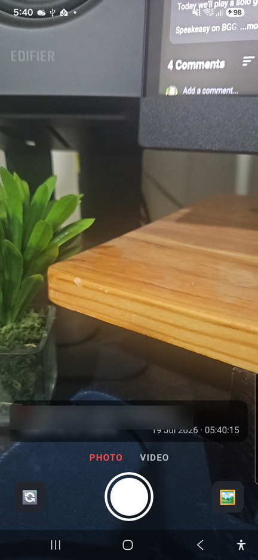
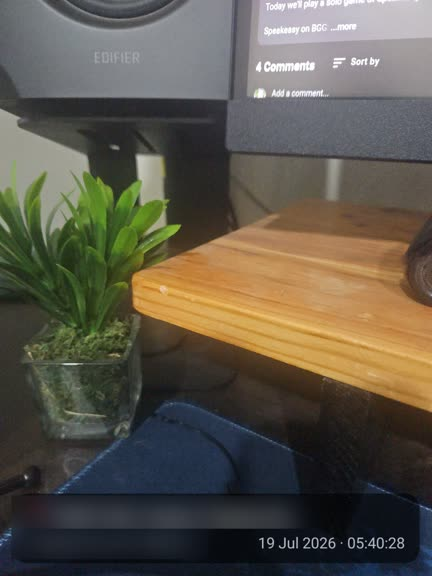
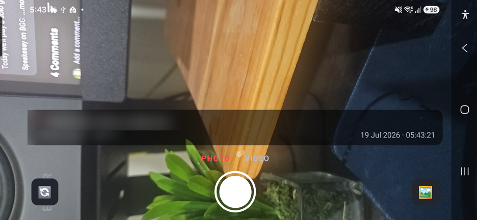
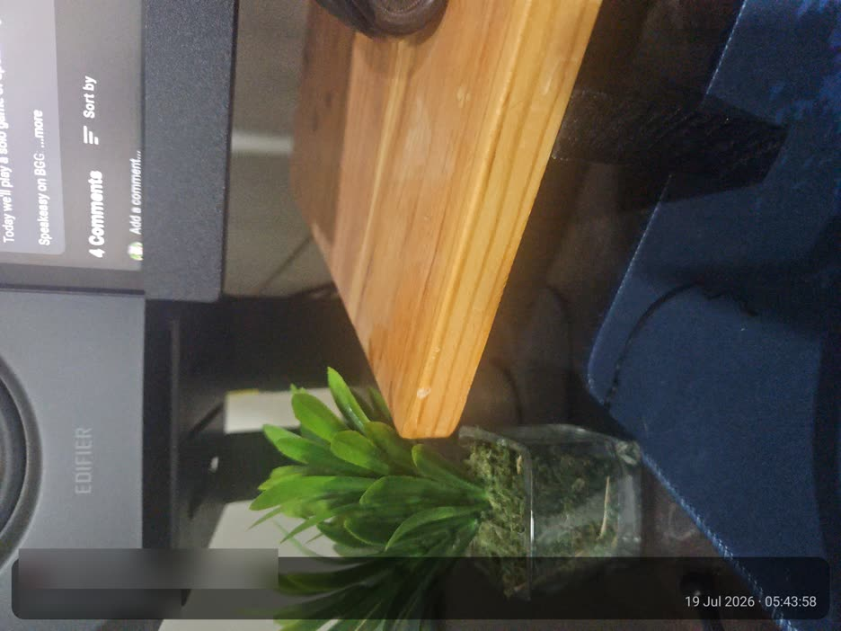

A free Android camera that burns your GPS location and a live timestamp into every photo and video — as it's captured, not after.
Android only · free & open source · no ads, no accounts, no tracking
The stamp is rendered into the pixels of your photos and videos live via Android CameraX — it survives sharing, exports, and edits. Videos save instantly with no re-encoding.
Reverse-geocoded address plus exact coordinates, straight from GPS. What you see on screen is what gets stamped.
Date and time with seconds, frozen at the moment a photo is taken or a recording starts.
Rotate freely — captures come out upright with the stamp along the bottom edge in both orientations, front and back camera.
Browse, swipe between, play, and delete your stamped captures. Everything is also saved to your phone's photo library.
Expo / React Native with a native CameraX module. MIT licensed, auditable, and built in the open on GitHub.




On your Android phone, open the latest release and tap the file ending in .apk under Assets.
Tap the download notification, or find it in your Files app under Downloads.
Android will warn about apps from outside the Play Store — tap Settings on the pop-up, turn on Allow from this source, and go back. If Play Protect warns, choose More details → Install anyway.
Tap Install, open the app, and allow camera, microphone, location, and photos — that's everything it needs to record stamped captures.
KDC Cam is a small open-source app shared directly as an APK from GitHub Releases. Installing it takes a minute and updates simply install over the old version — no uninstall needed.
No — the camera is implemented natively with Android CameraX, so the app is Android only.
Not by the app — the stamp is part of the image/video pixels from the moment of capture. That's the point: it can't quietly disappear when the file is shared or exported.
Into the app's built-in gallery and your phone's photo library. Nothing is uploaded anywhere — the app has no server, no account, and no analytics.
Download the newer APK from the releases page and install it — it replaces the old version and keeps your captures.